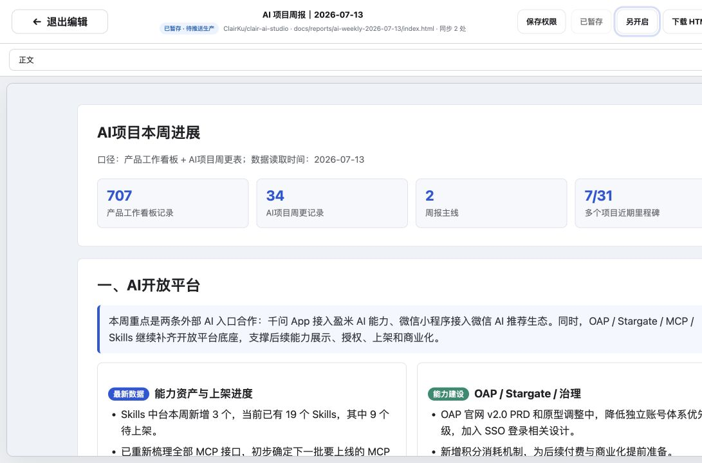

打开报告
从成果库进入任一可直接访问的 HTML 报告，顶部栏会出现“编辑文档”。
编辑会话与 GitHub 生产档案已经分开：正文修改后可暂存、另开预览或下载 HTML；只有点击“推送生产”并二次确认，才会更新原报告。
日常改几个字时，可以先保留为当前浏览器会话草稿，不必马上动生产档案。
从成果库进入任一可直接访问的 HTML 报告，顶部栏会出现“编辑文档”。
修改后显示“已修订”；点击“暂存”后保存在当前浏览器会话，不写 GitHub。
暂存后可“另开启”检查当前版本，也可下载完整 HTML 作为独立备份。
只有点击“推送生产”并二次确认，才会连接 GitHub 并更新原生产链接。
顶部状态依次区分“未修改”“已修订·未暂存”“已暂存·待推送生产”和“生产档案已更新”。

覆盖“临时改几个字”最常用的编辑动作，避免把工作台做成重型网页开发工具。
GitHub Pages 是静态托管，因此工作台把日常修订与生产写回拆成两个明确阶段。
报告脚本与内联事件在编辑时停用；画布没有同源权限，无法读取父页面 Token。
当前修订只存在本次浏览器会话；可恢复、预览或下载，不触发 GitHub。
二次确认后读取最新 SHA 并提交；权限不足会停止，暂存内容仍保留。
Token 等同密码。它只保存在当前页面的 JavaScript 内存中，刷新即清除；浏览器会话暂存不包含 Token。公共静态站无法提供服务端密钥保险箱，若要长期免 Token 推送，应升级为 GitHub App + 后端函数。
| 情况 | 当前处理 | 你会看到什么 |
|---|---|---|
| ClairKu GitHub Pages 报告 | 自动推断仓库、分支与 HTML 路径。 | 可编辑，可使用 GitHub Token 写回。 |
| 只想临时修改 | 点击“暂存”，保存到当前浏览器 sessionStorage。 | 显示“已暂存·待推送生产”，不会更新 GitHub。 |
| 现有 AES-GCM 加密报告 | 解密正文编辑，输出与保存时重新生成盐和 IV 并加密。 | 编辑体验是明文，生产文件仍需口令。 |
| 登录型或组织内报告 | 不尝试绕过登录与跨域限制。 | 继续在原站点打开；不显示“编辑文档”。 |
| 非 GitHub 或跨域不允许读取 | 读取失败时停止编辑，保留原页面入口。 | 提示具体原因，可尝试下载或手动配置源文件。 |
| 保存权限不足或文件冲突 | GitHub API 返回错误后停止，不覆盖新版本。 | 修改仍在当前编辑画布，可先下载 HTML。 |
数据截止与最后更新：2026-07-29。实现基于当前 ClairKu/clair-ai-studio 的 Vite + docs/ GitHub Pages 架构；编辑会话暂存仅限当前浏览器，不是跨设备云草稿。
官方依据：GitHub Pages 是静态站点托管；Contents API 支持以 Base64 内容更新文件，并要求更新时提供当前 SHA；GitHub 推荐优先使用可限定仓库与权限的 Fine-grained Token。